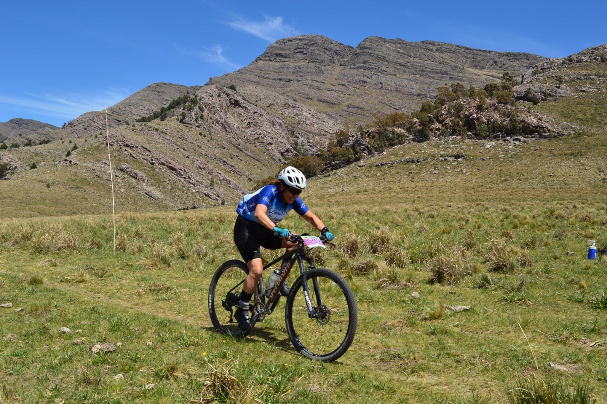
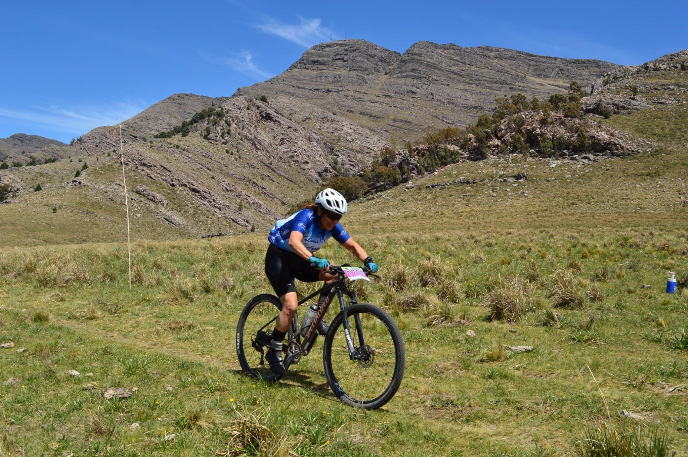

Marisa Diaccobasilis
Técnica en Diseño Multimedial
Estudiante de Programación en React - Diseño UX
Hobbies Ciclismo- Running
Nací en Ciudad de Buenos Aires (Argentina), vivi mi infancia en San Justo, trabaje mas de 15 años en el área de Sistemas y dando cursos de Informática, pero siempre tuve algo pendiente el diseño y la Programación llevarlo a un nivel mas alto, y aca estoy termine Desarrollo Full Stack el semestre pasado y ahora estoy estudiando el Curso de React Js con Alura y Diseño UX en Coursera.
Como hobbies tengo el Ciclismo donde he empezado con cicloturismo de a poco, fui pasando por varios grupos y conociendo mucha gente, me atrevi a las carreras que te dan esa adrenalina y conocimiento especial y en el ´23 conoci el Running,que comence a entrenar porque mi hija insistía que lo hiciera y asi juntas comenzamos...Corrimos carreras de 3k, 7k, 10k y la última que corri en Brandsen fue de 15k en trial. Actualmente ella esta en atletismo y a mi me gustan las carreras de Trial, con unos amigos estamos entrenando para ir a Tandil a fines de Agosto. Siempre uno deja cosas para mañana que nunca empezamos y ahora es el momento. Por eso retomando el tema de los videos que me encantan y ahora de a poco estoy de nuevo actualizando mi home con las salidas, viajes y carreras que he realizado. Espero que no se hayan aburrido y les digo nunca es tarde si tienen ganas de comenzar haganlo no es ganarle a nadie es ganarte a vos mismo cada salida, cada carrera dar un poco más!!


 
